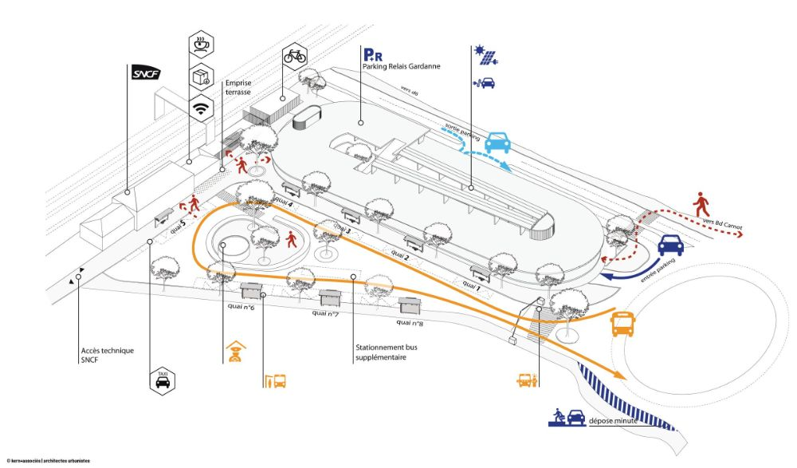

INBTP

Un Pôle d'Échange Multimodal (PEM) est un espace urbain aménagé qui regroupe plusieurs modes de transport en un seul lieu. Il facilite les correspondances pour passer rapidement d'un moyen de déplacement à un autre.
Dans le cadre de son mémoire de fin d'études sur l'aménagement d'un pôle d'échange multimodal, l'ingénieure Davina Kabongo vous invite à ce sondage. Votre participation nous aide à comprendre les besoins en mobilité autour de l'INBTP.
Étape 1 sur 20
Vos réponses contribueront à l'amélioration de la mobilité urbaine autour de l'INBTP.